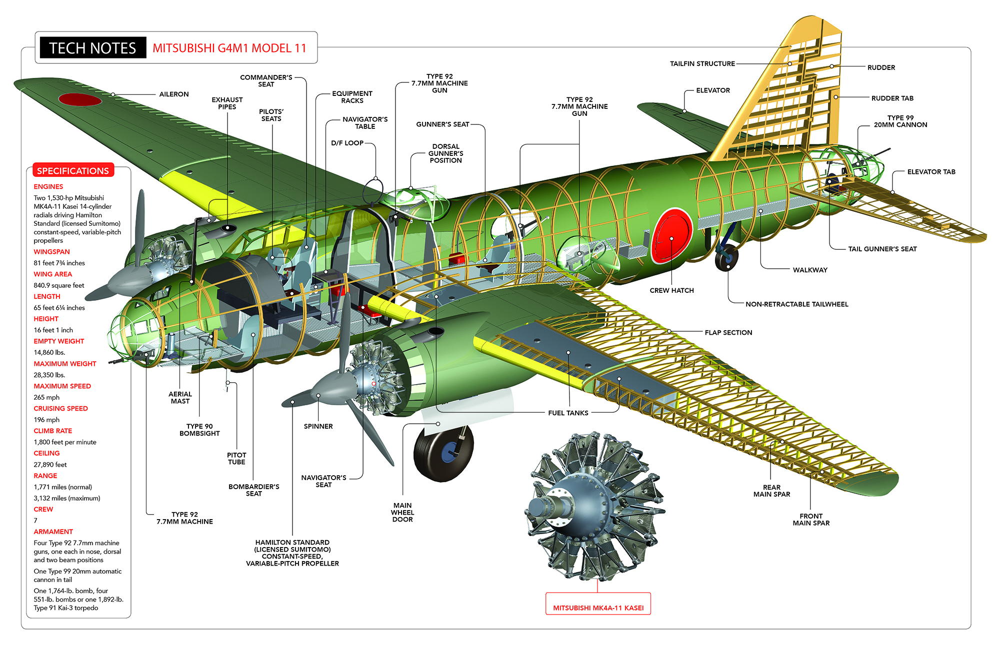
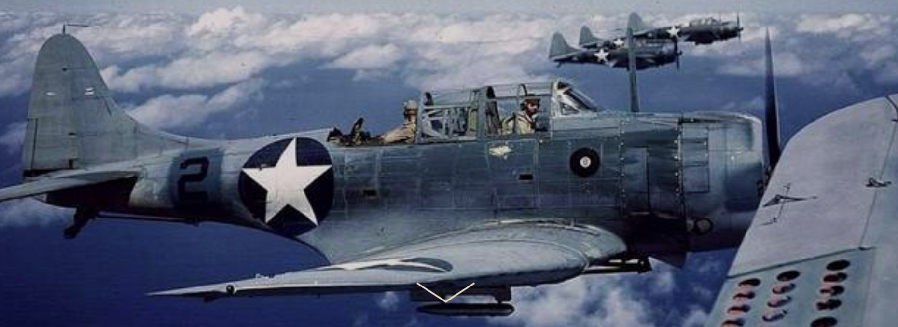
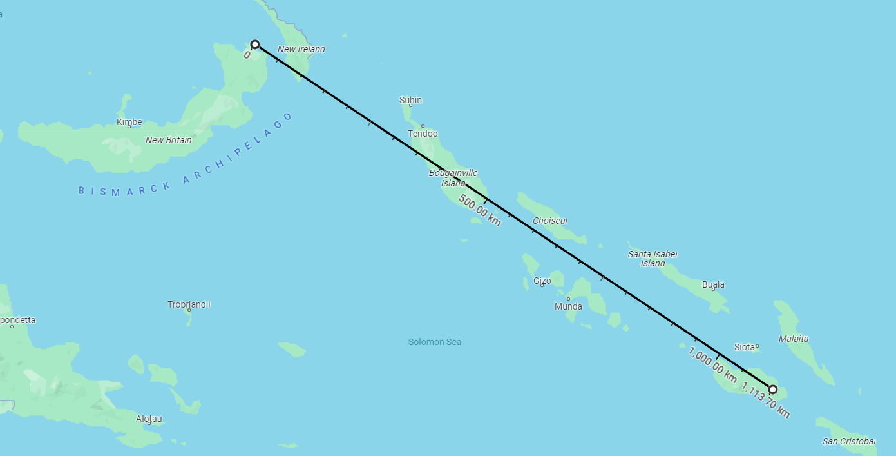
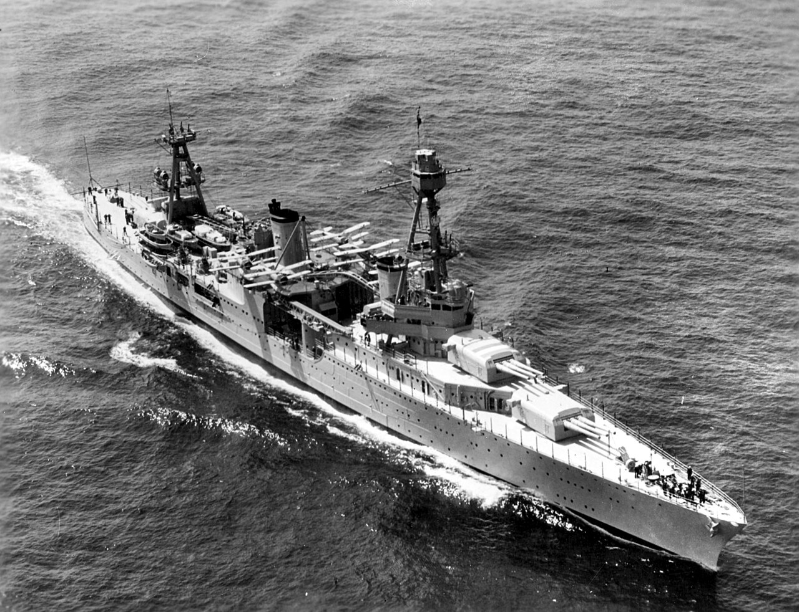
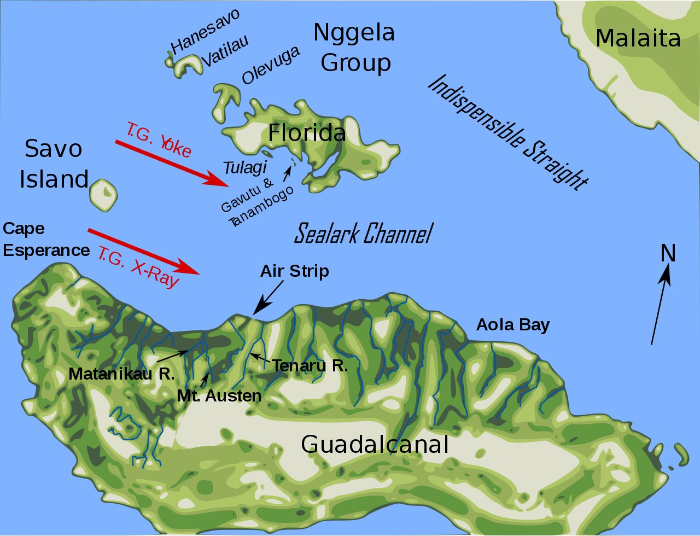
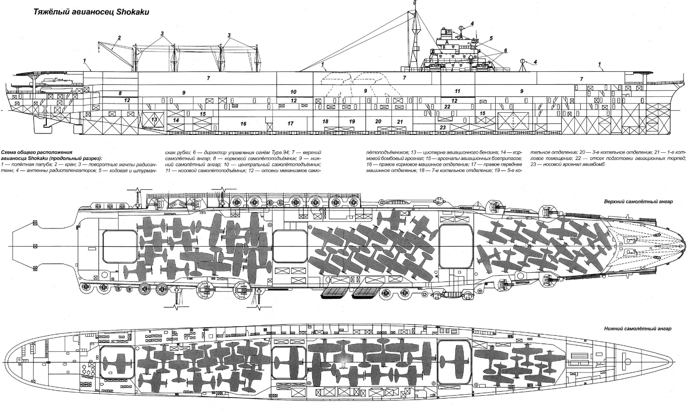
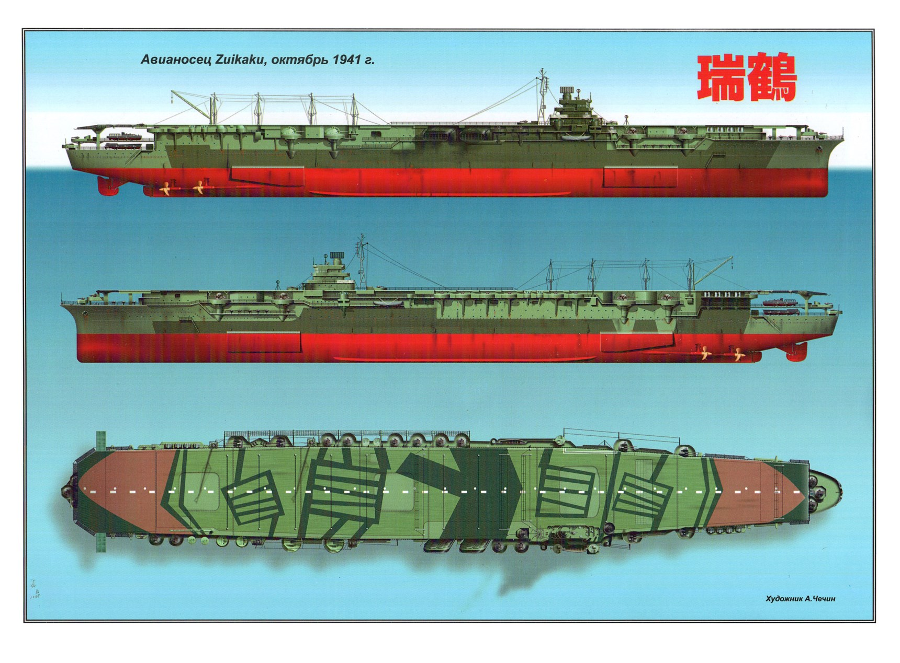

과달카날에서의 레이더 이야기 (4) - 기술은 없어도 전술은 있다
게시: 2024-02-29T06:30:15+09:00
<레이더가 없어서 슬픈 해군...?> 1942년 8월초부터 과달카날 일대에서 벌어진 전투에서, 일본해군은 레이더를 경시했던 것을 땅을 치고 후회했을까? 꼭 그렇지는 않았음. 1) 일단 미해군의 CXAM 레이더는 결코 완벽하지 않았고 2) 레이더만으로 제로센을 쏘아 떨어뜨리지는 못했기 때문. 먼저, 8월 7일 새벽 미해병대가 미해군의 엄호하에 툴라기와 과달카날 등에 상륙하자, 라바울의 일본군 기지에서는 미쓰비시 G4M1 "Betty" 쌍발 폭격기 27대를 날려보내 상륙 함대를 공격. 일찌감치 이들의 내습을 알고 있던 미해군은 Wildcat 전투기들을 보내 요격하려 했으나, 문제가 2가지 있었음. 첫째, 이 27대의 폭격기에는 17대의 제로센 호위 전투기들이 딸려 있었음. 둘째, 언제나 그렇지만 CXAM 레이더는 포착된 적기의 고도 파악을 제대로 못했음.

(G4M1 미쓰비시 해군 1식 폭격기. 미군은 이걸 Betty라고 불렀지만 정작 일본해군 조종사들은 '하마끼(葉巻, 시가 담배)'라고 불렀음. 이유는 모양새도 그렇지만 피격되면 불이 쉽게 붙었기 때문.) 항모들은 비교적 안전한 먼 바다에 나가 있는 동안 상륙함과 수송선들을 보호하기 위해 해안가에 바싹 붙은 순양함 USS Chicago에서 와일드캣 전투기들을 지휘하던 브루닝 대위는 고도 3.6km 정도로 와일드캣들을 유도. 그러나 와일드캣들이 폭격기들과 맞닥뜨려보니 폭격기들은 와일드캣보다 꽤 높은 고도를 날고 있었음. 상승 속도가 빠른 편이 아니었던 와일드캣이 기를 쓰고 올라가는 동안 급강하 폭격기가 아니라 수평 폭격기인 베티 폭격기들은 고공에서 그냥 폭탄을 투하. 설상가상으로, 기껏 올라온 와일드캣들이 베티들을 쏘아 떨어뜨리려하자 날렵한 제로센들이 달려 들었음. 이렇게 벌어진 난투극에는 18대의 와일드캣 전투기뿐만 아니라 툴라기 섬의 일본군 지상기지를 폭격하고 돌아가던 USS Wasp 소속 6대의 Dauntless 급강하 폭격기까지 가세. 이 싸움의 결과는 일단 베티는 모두 폭탄을 투하했고, 제로센 2대와 베티 4대가 격추되었고, 크게 파손된 베티 2대가 나중에 추가로 바다 위에 불시착. 그에 비해 미해군의 피해는 9대의 와일드캣과 1대의 돈틀리스가 격추됨. 불시착한 베티까지 스코어에 합산해도 8대 10의 패배. 다행인 것은 베티가 너무 높은 곳에서 폭탄을 투하한 결과 미해군 상륙선과 수송선들은 아무 피해를 입지 않았다는 것.

(의외로 돈틀리스 폭격기는 전면의 고정 기관총은 물론 후방 기총을 이용해서도 적지 않은 제로센을 격추. 그래서 일본해군 조종사들은 이 폭격기를 '복좌형 전투기'라고 불렀다고.) 자존심 강했던 미해군 와일드캣 조종사들은 레이더 관제사의 유도가 좋지 않아서 이런 결과가 났다며 브루닝 대위를 비난. 그러나 정작 하와이 태평양 사령부에 올리는 보고서에서 전투기 편대장은 '와일드캣보다 더 빠른 전투기가 필요하다'라고 실토. 한편, 수평 폭격기인 베티로는 움직이는 수상함들을 공격하는 것이 무의미하다는 것을 이미 알고 있던 라바울의 일본군은 왜 베티를 보냈을까? 이유는 거리 때문. 라바울은 과달카날 섬으로부터 1000km 넘게 떨어진 곳. 거기까지 무거운 폭탄을 달고 날아갔다가 돌아올 수 있는 폭격기는 편도 5,000km의 항속거리를 자랑하는 베티 밖에 없었던 것. 생각해보면 그걸 호위기로 따라왔다 되돌아간 제로센 (항속거리 편도 3,100km)이 정말 대단.

(저 거리 측정선의 왼쪽 끝이 라바울, 오른쪽이 과달카날. 저 측정선의 왼쪽에서 1/3 정도에 있는 크고 긴 섬이 부갱빌 섬.) <미해군에게는 기술이, 일본해군에게는 전술이 있다> 아무튼 베티로는 안 되겠다고 생각한 일본군은 나름 비상한 아이디어를 그날 오후에 바로 실행에 옮김. 급강하 폭격기 Aichi D3A "Val" 9대를 과달카날 폭격에 투입한 것. 발은 항속거리가 1300km 정도라서 무거운 폭탄을 실으면 가서 폭격은 가능해도 라바울로 돌아올 수가 없었음. 발 폭격기들은 도꾜를 폭격한 둘리틀 폭격대처럼 그냥 편도로 날아가 폭격한 뒤, 돌아오는 길에 있는 부갱빌(Bougainville) 섬 남쪽의 약속된 지점에 그냥 해상 불시착하기로 함. 조종사들은 미리 파견된 일본 선박과 수상정 등이 건져주기로 함. 이렇게 반쯤 자살 공격이라고 생각해서였을까? 이들에겐 호위 전투기도 안 붙임. 호위 제로센들이 안 붙었으니 이 폭격기들은 일찌감치 CXAM 레이더에 발각되어 와일드캣의 밥이 될 불쌍한 존재들. 대체 일본군은 뭔 생각이었을까? 그런데 놀랍게도 이들은 순양함 시카고의 CXAM 레이더를 피해 상륙함대 위에 불쑥 나타남. 비결은 지형지물의 활용. 이때 즈음해서는 일본해군도 미해군이 레이더라는 전파 장치를 써서 자신들의 항공기를 미리 탐지한다는 것을 알고 있었고, 이런 레이더는 수평선 아래나 산 뒤쪽의 물체는 탐지하지 못한다는 것도 알고 있었던 듯. 이 급강하 폭격기들은 툴라기와 과달카날 사이의 바다에 떠있는 미해군 함대의 레이더를 피해 섬들의 북쪽 해변을 따라 낮게 날아온 뒤, 북쪽 플로리다 섬을 빙 돌아 미해군 상륙함대를 덮침. 레이더만 믿고 있던 미해군은 그야말로 대경실색.

(중순양함 USS Chicago (CA-29, 9천4백톤, 32.7노트). 1934년의 모습으로서 아직 CXAM 레이더 장착 이전의 모습. 4대의 정찰용 Curtiss SOC Seagull 수상기를 탑재.)

(과달카날 섬과 툴라기 섬의 지도. 툴라기는 정말 작은 섬이고, 툴라기 위쪽의 섬이 플로리다 섬.) 그러나 역시 호위 전투기를 붙이지 않은 것은 좋은 생각이 아니었던 듯. 완벽한 기습이었지만 미해군 상륙함대 위에는 15대의 와일드캣들이 CAP을 치고 있었고, 비록 좀 놀라기는 했지만 이들은 9대의 폭격기를 여유있게 난도질. 폭탄은 모두 빗나갔고 9대 중 4대만 살아서 부갱빌 남쪽의 약속된 지점까지 돌아감. <레이더만 피한다고 장땡이 아니다> 한편, 라바울에서는 두 번의 공격이 모두 와일드캣의 맹렬한 요격으로 실패하자 근처 바다에 미해군 항모가 아직 있는 것이 확실하다고 판단하고 그를 습격하기로 함. 그래서 먼저 일본해군의 천리안인 장거리 정찰 수상기를 과달카날 인근 먼 바다 여기저기로 보낸 뒤, 이어서 베티 폭격기 23대와 호위 제로센 15대를 날려보냄. 날아가는 동안 정찰 수상기들이 미해군 항모를 찾아내면 그걸 치고, 아니면 다시 상륙함대를 친다는 계획. 그런데 왜 또 베티를? 이번에는 저공에서 어뢰로 공격하기로 하고 베티에 어뢰를 장착해서 날려보냄. 이번에도 먼저번 급강하 폭격기처럼 이들은 레이더를 피해 부갱빌 등 이어진 섬들 북쪽으로 날아감. 그러나 들킴. 어떻게?? 섬은 레이더 전파를 가려주는 역할도 하지만 민간인들을 해전에 개입시키는 양날의 검 역할을 하기 때문. 호주해군은 전쟁이 발발하자 솔로몬해 일대 여기저기 섬에서 플랜테이션 농장을 운영하는 호주해군 예비역들을 조직하여 '감시원'으로 삼고 고주파 장거리 무전기를 지급했고, 특별히 이들만 쓸 수 있는 주파수도 지정해줌. 부갱빌 섬 북쪽 해안에서 W. J. Read라는 예비역 호주 해군 대위가 이 베티 폭격기떼를 보고 무전을 때린 것. 미해군 상륙함대는 이 무전을 직접 수신하고 만반의 준비를 하고 있었음. 그래서 이들이 직선으로 섬 북쪽 해안으로 날아올 경우의 도착 시간에 맞춰 상륙함대 위에 18대의 와일드캣들을 띄워놓고 이들을 기다렸음. 그런데 미해군은 이 라바울 베티 편대에게 2가지 계획, 즉 먼저 항모를 찾으면 그걸 치고 못 찾으면 상륙함대를 친다는 plan A와 plan B가 있다는 것을 몰랐음. 그래서 일본해군 폭격기들은 정찰 수상기들의 '항모 발견' 보고를 기다리느라 섬 북쪽 그늘에서 매우 천천히 비행. 덕분에 이들이 예상 시간을 훌쩍 넘겨 30분이 지나도 나타나지 않자 미리 설레발을 쳐서 너무 일찍 날아올라 대기하고 있던 와일드캣 18대 중 15대는 연료 부족으로 항모들로 되돌아 가야 했음. 이들을 대신할 새로운 와일드캣 9대가 먼 바다의 항모들로부터 날아오느라 아직 도착하지 않은 순간, 정말 약올리는 것처럼 다시 플로리다 섬을 빙 돌아 베티+제로센 편대들이 600m의 저공으로 딱 나타남. 그러나 역시 무거운 어뢰를 달고 저공으로 나는 베티에게, 대기하고 있던 순양함과 구축함들의 집중 대공포화는 감당이 어려웠던 듯. 약 10분간 지속된 공습이 끝난 뒤 스코어는 23대의 베티 중 18대 격추, 15대의 제로센 중 2대 격추. 미군 피해는 어뢰에 맞아 수송선 1척이 침몰하고 구축함 1척이 대파됨. 하지만 이 싸움은 이제 겨우 시작일 뿐. 일본해군은 미해군 항모전단이 나타났다는 소식에 '항모는 항모로 잡아야지 1000km나 떨어진 활주로에서 뜨는 육상 발진 폭격기로 뭘 하겠나'라며 항모를 출동시킴. 바로 1941년 취역한 일본해군 최신예 정규항모이자 진주만을 습격했던 역전의 용사 쇼가꾸(3만2천톤, 34노트)와 즈이가꾸(3만2천톤, 34노트). 그리고 덤으로 경항모 류조.
게다가, 이들에게는 미해군이 전혀 예상하지 못했던 신무기가 장착되어 있었음.

(쇼가꾸는 그동안 일본해군이 얻은 모든 경험과 기술을 다져넣어 건조한 최신예 항모로서, 4만2천톤의 큰 배수량에도 불구하고 불과 65대 정도의 함재기밖에 못 싣던 아까기와는 달리, 3만2천톤의 배수량인데도 72대의 함재기를 수용. 거기에 더 해 더 빠른 속력, 더 나은 대공무장과 더 나은 장갑을 갖춤.)

(쇼가꾸와 즈이가꾸는 자매함으로서 이 둘이 쇼가꾸급 항모이고, 이들이 일본해군 항모 중 가장 우수했던 애들. 이들의 뒤를 이은 히요급 항모는 실은 호화 고속여객선으로 건조되던 것을 일본해군이 도중에 인수하여 항모로 개조한 뒤 1942년 취역시킨 것이라 더 작고 더 느림.)